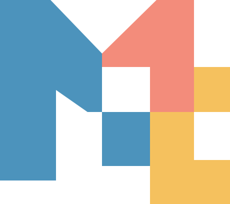

PC の Pi とつなぐPi を動かしている PC（この PC でも別の PC でも）と、このアプリをペアリングします。
01
別の PC とつなぐときは、両方を同じアカウントの Tailscale に入れるこの PC の Pi とつなぐだけなら不要です。Tailscale の入れ方
02
Pi を動かす PC のターミナルで実行する
$pi install npm:@phni3j9a/pimate
>/pimate setup
03
表示されたリンクをコピーして、ここに貼り付ける
クリップボードにリンクがあれば、ウィンドウに戻ったとき自動で入ります。
pimate://pair?… Ctrl V
つなぐ